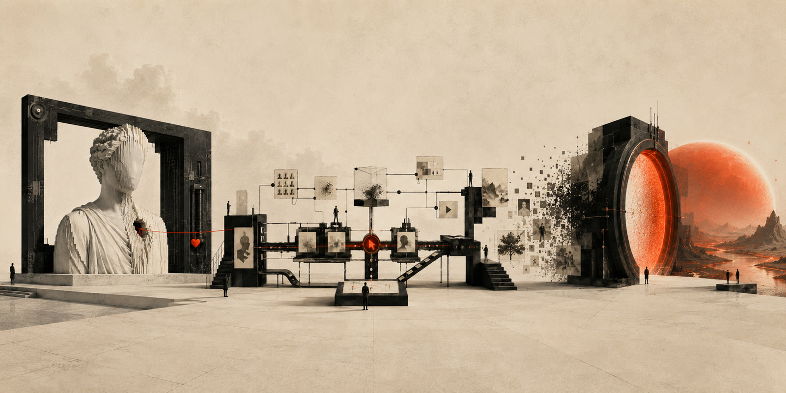

AI 시대,
창작의 정의를 다시 묻다
세 편의 글 · 표지를 눌러 각 편으로

원자료 · 이 글들을 받치는 두 자료
소개
2025년 11월, 한 기업 워크숍에서 한 발표 "AIGC 시장 트렌드 및 창작자 패러다임의 변화". 그 발표와 그 앞의 연구 노트, 그리고 몇 달 지나 다시 쓴 세 편의 글을 한자리에 두었다.
발표는 하나의 물음에서 출발한다. AI가 무엇이든 만들어내는 시대에 인간의 실력과 노력은 여전히 값어치가 있는가. 발표는 답을 내놓는 대신 전제를 바꾼다. AI는 더 빠르고 값싼 도구가 아니라, 사진이나 영화가 그랬듯 고유한 문법을 지닌 완전히 새로운 매체라는 것이다.
사진이 회화를 밀어내지 않고 기록의 의무에서 풀어주었듯, 새 매체는 창작자의 자리를 지우기보다 옮긴다. 손이 맡던 실행은 줄고, 무엇을 요구하고 무엇을 고를지 아는 판단이 그 자리를 대신한다. 프롬프트라는 새 언어에서 실시간 협업으로, 다시 현실과 가상의 경계가 흐려지는 세계로 이어지는 여섯 장이 그 이동을 따라간다.
이 글은 신기헌의 디지털 트윈 프로젝트를 바탕으로 AI 에이전트가 100% 작성하고 편집했다.
Written and edited 100% by an AI agent from the Kiheon Shin Digital Twin project.